1.0 Critics
The statistics on merchandise trade are from Department of Statisitcs Singapore, ‘Merchandise Trade by Region/Market’.
We are going to use this data set to get some insights.
1.1 Original Visualization
From the data set we can see that there are import data and export data of hundreds of markets and the original visualization below select several markets to see the details in 2020.

1.2 Critics of Clarity
The original visualization has some drawbacks which may mislead readers or convey inaccurate information.
There is no unit in the axis, so readers cannot determine it is 60 million or billion or other directly. Although we can infer from the call out ‘S$ 136.2 Bil’ that the unit is billion, it will be more clear to add the unit either to axis label or axis title.
There is no tick mark, grid line or tooltip and the call out only shows the total value. This make it difficult for readers to know the specific import or export value.
There is no title, no period information. Readers cannot know these values are calculated during which period and why these markets are shown but not other markets.
The figure cannot reflect the information in the blue rectangle. It only shows the details of merchandise trade performance with major trading partners of Singapore in 2020, but the information includes the comparison before and after 2006/2009.
1.3 Critics of Aesthetics
The original visualization has some parts may not be that beautiful.
The different color of every circle/market is redundant and meaningless. In the graph, every market is represented by a circle with a unique color, but the color actually does not convey any information and is not necessary.
There is no transparency and the size of circles is not appropriate so that there are some overlapping. Readers cannot clearly see the boundary of each circle and the distribution of all circles.
The top net exporter and importer are not that attractive since there are so many colors in the figure and they may distract readers.
2.0 Alternative Graphical Presentation
We are going to create a sketch of what we are going to design, so that the following creating steps can go for that goal.
2.1 Sketch

2.2 Advantages
2.2.1 clarity
Try to unified the unit and add the unit label. So that readers can know the unit at first glance.
Keep the grid line so that readers can check the value more clearly.
Add the graph title, subtitle and dashboard title which including the time period and the top n trading partners of Singapore so that readers can know the period is from 2011 to 2020 and the markets are the top n trading partners of Singapore.
Not include the information of blue rectangle.
2.2.2 Aesthetics
Let the balance of trade set the color of the bubble. Red represents trade deficit and blue represents trade surplus. the higher the amount, the barker the color.
Not set 100% opacity, set it to 75% and add a white border.
Instead of sign, using annotate since the animations will change the place of the circle. And a market not always be the top net exporter/importer.
2.2.3 Other added information
Balance of Trade (BOT, export - import) is an important concept in analysis the trade, we add such a value in the graph to make it more straightforward. We use gray lines to represent it.
Animations can show the changes better, the show history function can record the trail of the circle in the past period.
3.0 Tableau Design
The final visualization is shown below.

This link Trade Viz provides the tableau public website.
4.0 Step-by-step Description
Now we comes to the details of creating the new visualization.
4.1 Data Preparation
First of all, we download the data ‘outputFile.xlsx’ from the official website and check all the data we have. It is an excel file and contains three sheets, one is content, one is T1 (import) and another is T2 (export).

4.1.1 Get the data for Import/Export/total/BOT
We open a new excel file and name it ‘merchandise’.
Back to ‘outputFile’ and select ‘variable’ cell in T1 (import) sheet, press ctrl+shift+right to select the entire row and then press ctrl+shift+down to select the entire table. Copy the table and paste it to ‘merchandise’ ‘sheet1’ and renamed the sheet to ‘Import’.
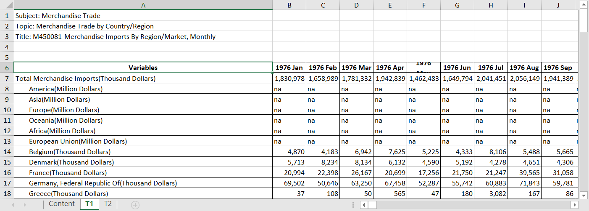
Then delete the row of ‘Total Merchandise Imports(Thousand Dollars)’ since we are focusing on the markets and will not use the total amount.

Delete the rows of America, Asia, Europe, Oceania, Africa. The reason is the same, they are the sum of several markets in the whole continent. We will not use them since we are focusing more detail markets.
Also, we focus on the period from January 2011 to December 2020 and delete all other columns of periods. We select column B ‘1976 Jan’ and go to column PE ‘2010 Dec’, press shift and select the column, right click and select delete.
We delete the value of period from Jan 2021 to Apr 2021 using the same way.

Using the same steps to get the sheet ‘export’ from ‘T2’, delete the row of ‘Total Merchandise Exports(Thousand Dollars)’ instead of import.
4.2 Data Visualization
Now we open the tableau and start to create our visualization.
4.2.1 Set the data source
We import the ‘Merchandise.xlsx’ and drag the ‘Export’ to the up right window.

Then we split the ‘Variables’ column by click the triangle and select ‘split’. The results are as follow.
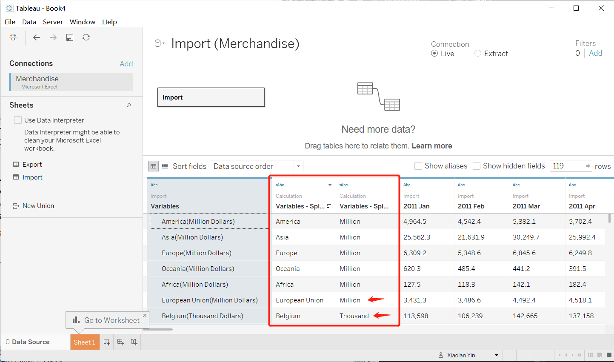
We can see that the unit of different markets are different, and some markets may split not that accurate.

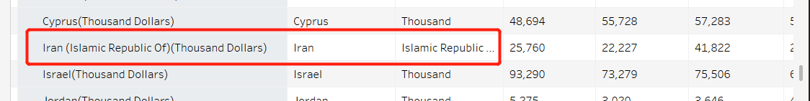

We can see that European Union is using Million as its unit. Later on we can create a new calculated field for the actual merchandise trade value.
Now we change the name of the two new columns to ‘Market’ and ‘Unit’ and hide the original column.

Then select the columns from ‘2011 Jan’ to ‘2020 Dec’ by click the first column, press ‘shift’ and click the last column.
Then click the triangle at the top right side of the last column and select pivot.

Next change the name of the pivot two new columns to ‘Period’ and ‘import’ and change their data types to ‘Date’ and ‘Number(Decimal)’.
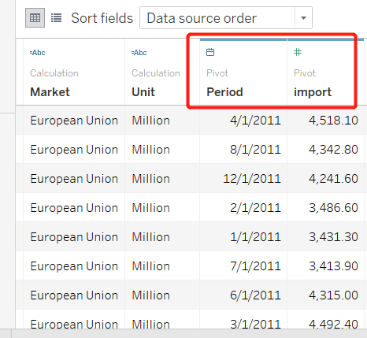
Do the same steps for export and set the relation ship between import and export as follow. That is, match the rows when the variables and the period are both the same.
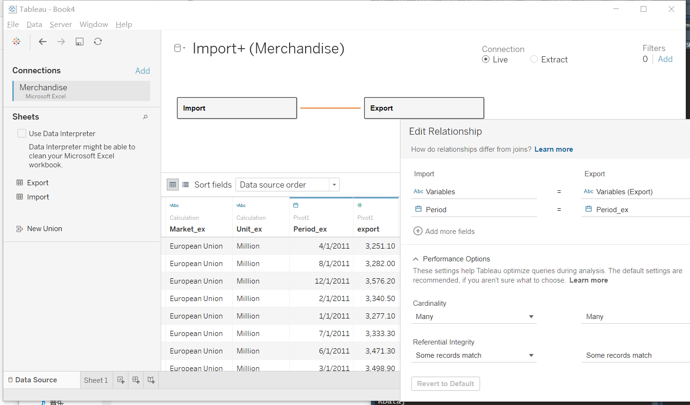
4.2.2 Set the correct data category
First we check the ‘Tables’ and change the ‘import’ and ‘export’ from discrete to continuous by dragging them down to the continuous part.

4.2.3 create calculated fields and parameters
- actual import and export values
We go to the Analysis -> Create Calculated Field and name the new measures ‘Actual_Import’ and ‘Actual_Export’. If the Unit of the row is ‘Million’ then the value of Actual_import/Export is import/export * 1000000, else (include those ‘Thousand’ and some inaccurate split) is import/export * 1000.


- total merchandise/balance of trade
Total merchandise is the sum of export and import value.
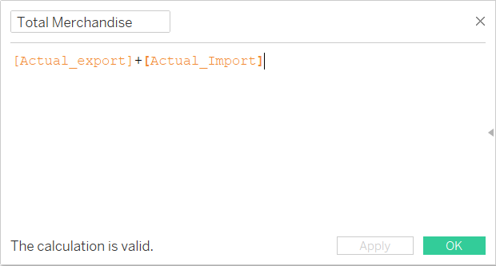
balance of trade is the difference of export and import.

- Rank of total merchandise trade
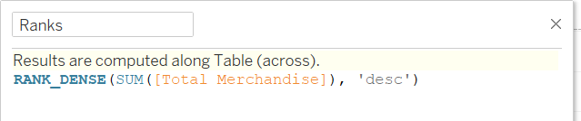
- positive BOT and negative BOT
This is used for the tooltip.
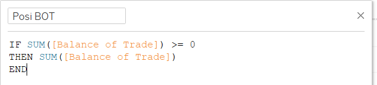
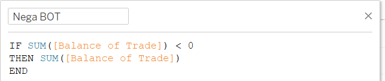
- top n markets and top n markets set
We want to set a interactivity so that readers can select top 5/10/15/20/… markets they want to check. So we need to set a parameter n.
we go to the data pane and click the triangle, select create parameter.

The name of the parameter is ‘top n markets’, we set the current value to 10, allowable values to range from 5 to 30, the step is 5.

Then we comes to the Market of import, right click it and go to create -> set.
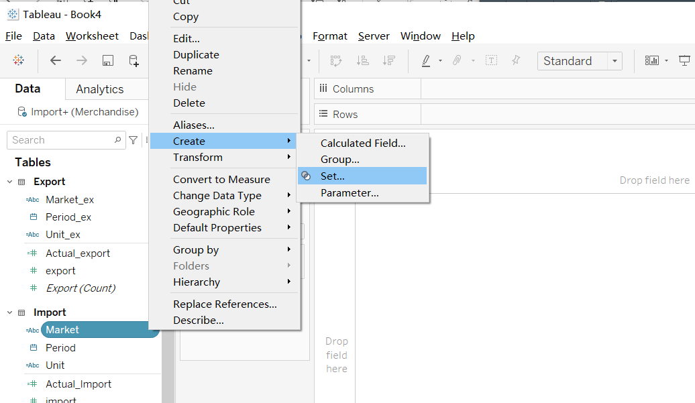
Change tab to ‘Top’ and select ‘by field’, set the top n to ‘top n markets’ by sum of ‘Total Merchandise’. The name of the set is top n markets set.
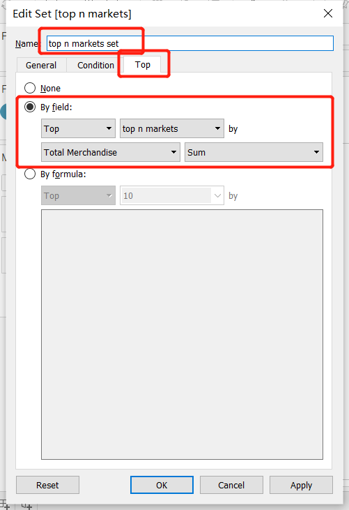
- diagonal reference
This is used for the diagonal reference line later on.

4.2.4 set filters
There are two filters we need to apply, period and the top n markets set.
First we drag period to the filters and select year, click next, select all and click apply.

Then we right click the period filter and select ‘show filter’.
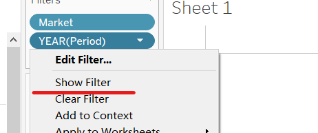
Change the filter from multiple to single choice.

Next we drag the top n markets set to the filters and right click top n markets parameter, select show parameter.
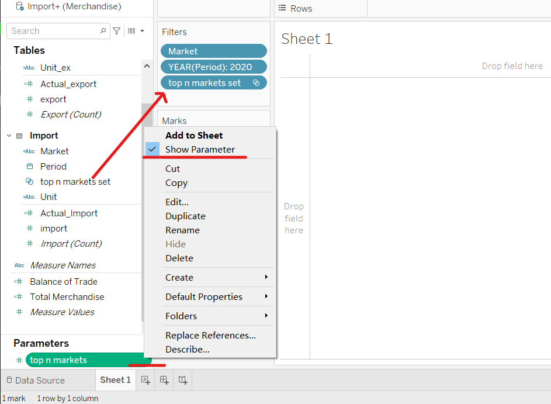
4.2.5 Create the Bubble plot
We drag the Actual_export to Columns and Actual_import to Rows, then drag the market to detail, Total Merchandise to Size and Balance of Trade to color.

Then we are going to make the size of the circles larger, set the opacity to 75% and add a white border.
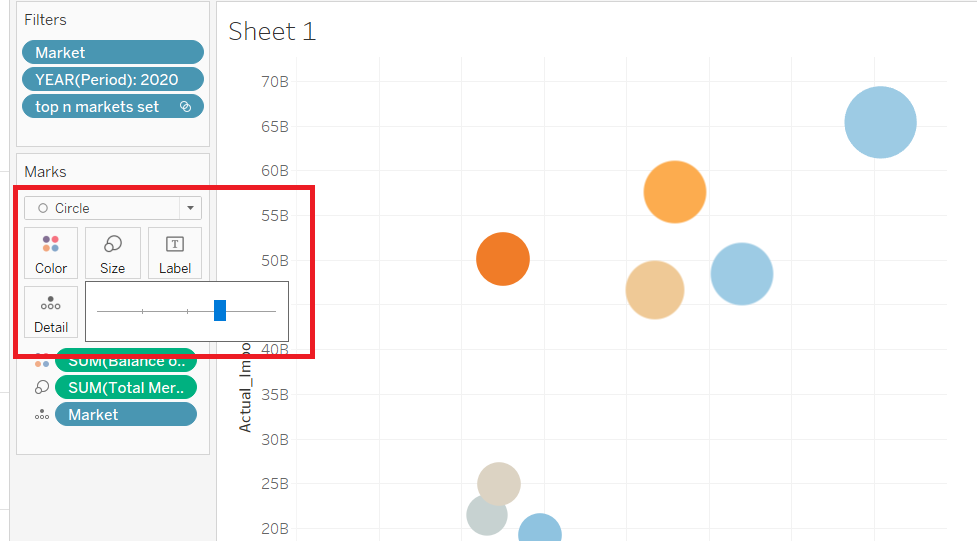

Also, double click the color bar at the right side of the graph and check the ‘Use full color range’ and center 0’.
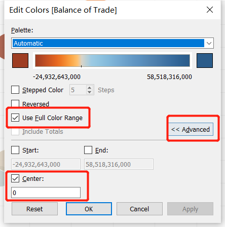
Then we are going to add the X axis reference line.
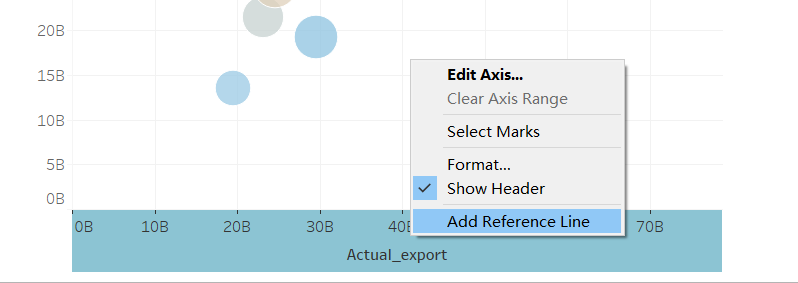
Custom the reference line to ‘Avg

Do the same steps for Y axis reference line.
Drag the Diagonal reference to Rows.
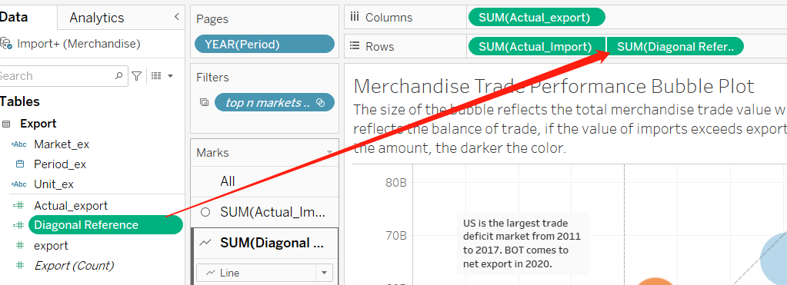
Click the triangle in the right side and select Dual axis.

Comes to the Diagonal reference axis and select synchronize the axes.
Remove all the color, label and tooltip for diagonal reference except market for detail.
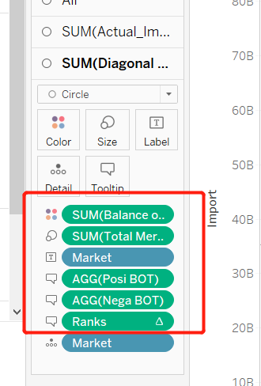
Change the mark from circle to line.

Right click the diagonal reference line and comes to Trend lines -> Show trend lines.

Click color and set opacity to 0.

Right click the trend line and select format, set the format as follow(change the width of the line and set to dark gray).
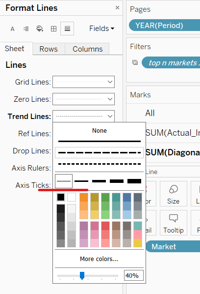
Right click the Diagonal reference and uncheck the show header.
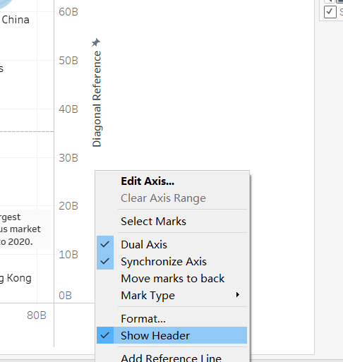
Then set all x and y axes to fixed range from 0 to 83,540,000,000.

Next we change the value format of the tooltip. We click the sum(Actual_export) and select format, switch to pane and set the Numbers of Defult.
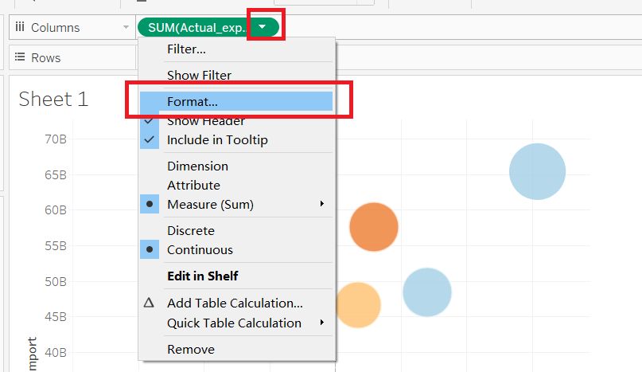
We choose Currency Custom, select appropriate type of negative value and set the display Units to Billion(B).

We do the same step to change Actual_import, Total merchandise and balance of trade.
Then we drag the Market to label, and the Ranks, posiBOT, NegaBOT to tooltip. Edit the tooptip as follow.

Edit the x and y axes labels, name of filters, title and the subtitle as following. The subtitle introduces the meaning of the size of the circle.

Since we have already introduce the representation of the size of the circle, we comes to the size card of the bubble and hide it.

Then we go to Format -> Animations and click on after Animations pane appears. Set duration to 1 second.

Drag the year(period) from filters to pages.

Edit the filter title and set the show history details, uncheck the show history for now.
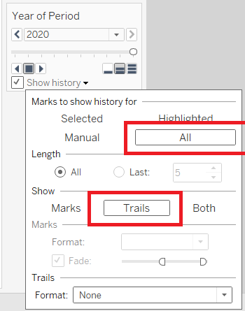
Finally we add some annotations and rename the sheet to ‘Merchandise Trade Performance’.
4.2.6 Create BOT viz for tooltip
We are going to create a visualization of balance of trade for a market in a specific year and show this figure in the tooltip of previous sheet.
First we drag the top n market set to filters, drag period to columns and set to month, drag two balance of trade to rows.

Then set the two different y axis to different fixed range and delete the title of second axis.
1st 
2nd 
Drag the balance of trade to label in All marks and set the format to currency custom, just the same as before.

Finally go back to ‘Merchandise Trade Performance’ and edit the tooltip. Set the maxwidth to 600.

4.2.7 Create the bar chart
Drag the top n market set and market to filters, Period to columns, Total merchandise and posi BOT to rows and drag nega BOT to the second axis of posi BOT.
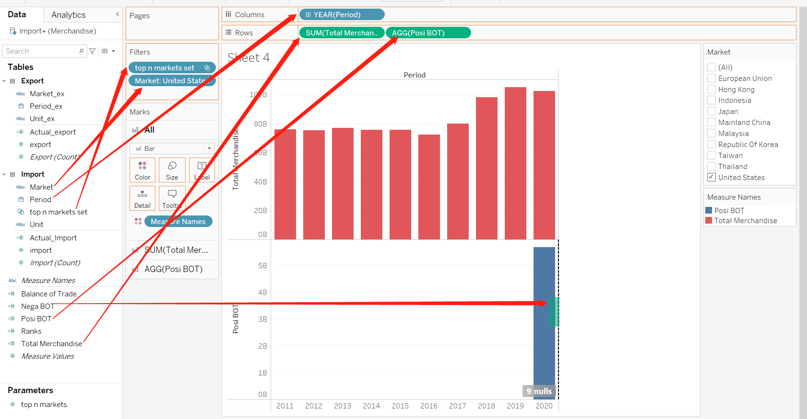
After those we synchronize the two Y axes by right click the Y axis and select synchronize.

Then we change the market filter to single value dropdown, edit the title and tune the color of measures to blue for surplus, red for deficit and gray for total merchandise.

Hide the field labels for columns, uncheck show header for the second axis for balance of trade and edit the exist posi BOT axis label to ‘Balance of Trade’.
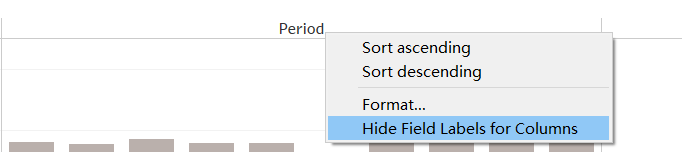

Hide the indicator.

Set the format of the three measures the same as those in the ‘Merchandise Trade Performance’.

Drag the total merchandise to label of SUM merchandise mark and set the font size to 8.

Do the same for nega BOT and posi BOT, instead of drag to the SUM merchandise mark, drag them to AGG nega BOT and AGG posi BOT separately.
Finally rename the sheet ‘Total & BOT’.
4.2.8 Create a Dashboard
We drag ‘Merchandise Trade Performance’ and ‘Total & BOT’ to the dashboard and adjust them.
Check Show dashboard title, edit the dash board title and two worksheet titles.
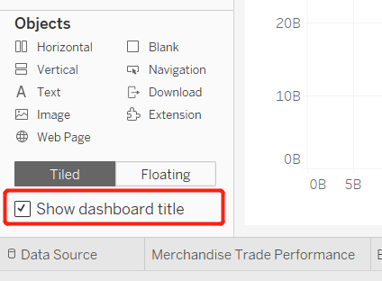
Then edit the format of dashboard by going to format -> dashboard, set the default shading to light gray and the title shading to a relatively darker gray.


The final dashboard is as follow.
5.0 Observations
These are Singapore’s merchandise trade with its trading partners.
From the bubble plot we can see that the closer the circle to the downright corner, the higher the trade deficit, otherwise the higher the trade surplus.
Click show history.
5.1 United States
When we focus on the United States, we can see that from 2011 to 2017, it is always the largest trade deficit market of Singapore (trade deficit range from $12.75B to $20.98B).

Then after 2017, Taiwan replace the US and became the market has the largest trade deficit. We can see from the bar chart that the total merchandise with US increased ($79.92B, $97.91B, $105.02B) but balance of trade remain almost the same ($15.19B, $15.22B, $14.40B). That is, the import and export value both increased but the difference did not change much. In the bubble plot the circle of US remove opposite the coordinate origin but did not cross the diagonal reference line passing through the origin.
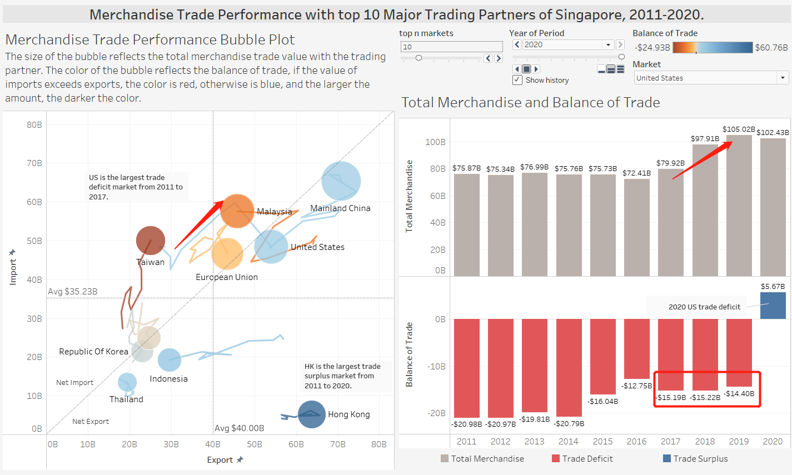
The largest change happened in 2020. From the bubble plot we can see that the US circle cross the diagonal reference line, which means it came to net export from net import.
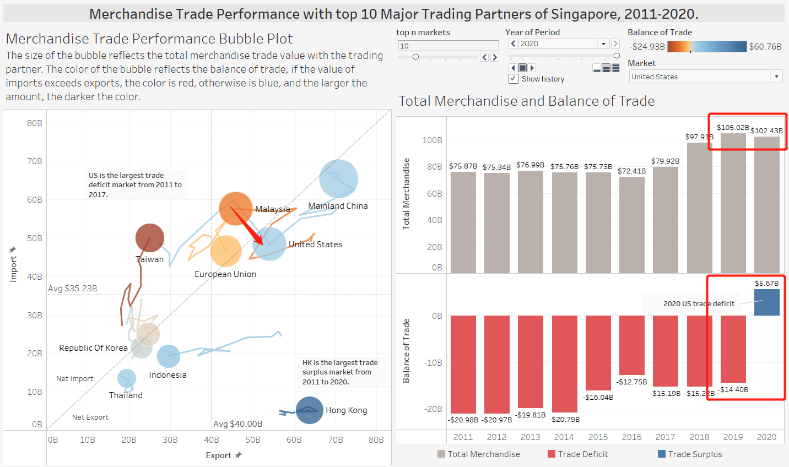
In the bar chart the total merchandise of US did not decrease significantly($105.02B, $102.43B), but the balance of trade changed significantly from -$14.40B to $5.67B.
As we all known, US trade deficit jumps to 12-year high in 2020 under the influence of covid 19, and the real GDP of the United States shrank by 3.5% in 2020 (reference), the largest annual decline since 1946. It is reasonable for Singapore to export more to US and import less than previous years.
The detail balance of trade of US was always below 0 before 2020. The trade surplus first appeared in April 2020.
US 2019 
US 2020 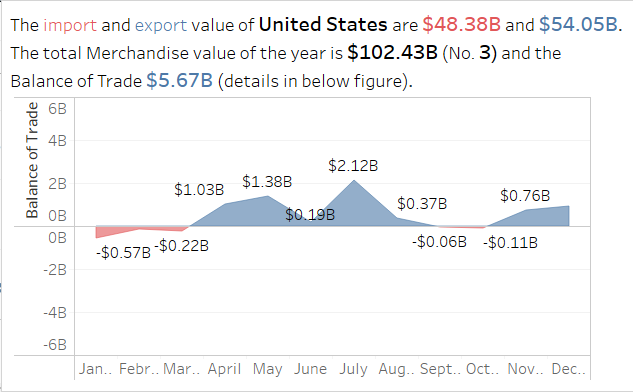
5.2 Malaysia and Mainland China
We can see that Malaysia was Singapore’s biggest trading partner in 2011 and 2012, Mainland China was the second, later on Mainland China replaced Malaysia as the biggest trading partner from 2013 to 2020, Malaysia was the second.
before 2013 
after 2013 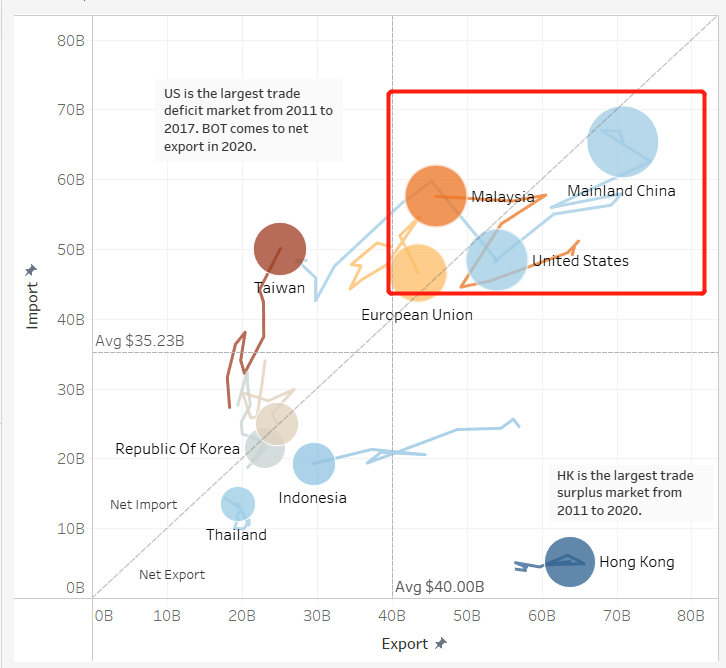
After checking the bar chart, we can see that the total merchandise seemed keep stable but balance of trade had a trend of decreasing since 2015. Before 2019 Malaysia was in the net Export area but 2019 it had a net import value $0.73B. In 2020 it witnessed the highest trade deficit during 2011-2020($11.65B). We can see that the structure of merchandise trade from Singapore to Malaysia was changing from net export to net import.
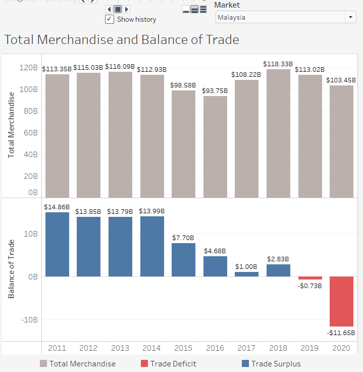
The first trade deficit appeared in Nov 2016 and when it comes to 2020, the balance of trade is all below 0.
Malaysia 2016 
Malaysia 2020 
5.3 Indonesia
Indonesia was the 8th biggest trading partner of Singapore in 2020. But from 2011 to 2013 it was the 4th biggest trading partner. The ranking kept falling from 2014 to 2020.
| Period | Rank |
|---|---|
| 2011-2013 | 4 |
| 2014 | 5 |
| 2015-2016 | 6 |
| 2017-2019 | 7 |
| 2020 | 8 |
Indonesia 2013 
Indonesia 2020 
In the bubble plot we can see that Indonesia is moving towards the origin. That is, the total merchandise value was decreasing and also the balance of trade.

We can see in the bar chart that total merchandise trade value in 2020 ($48.82B) was almost half of that in 2011 ($81.56B) and the balance of trade in 2020 ($10.32B) was lower than 1/3 of that in 2011 ($32.40B).
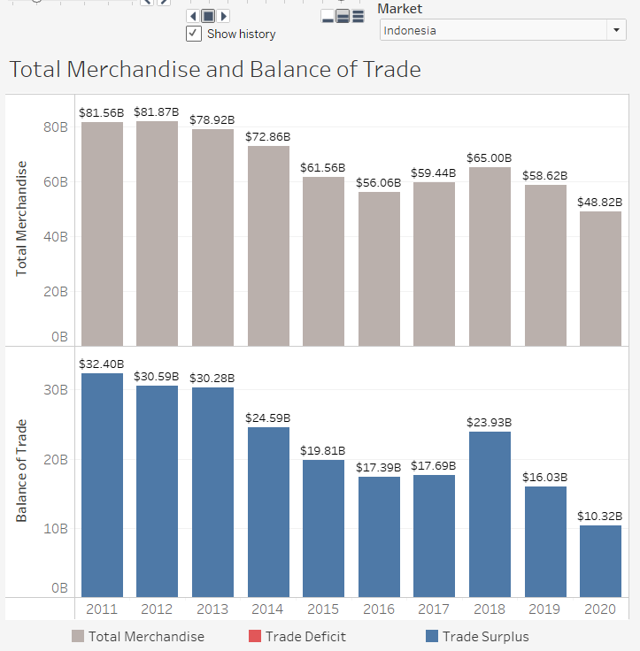
This means that India’s influence over Singapore in trading area is declining.